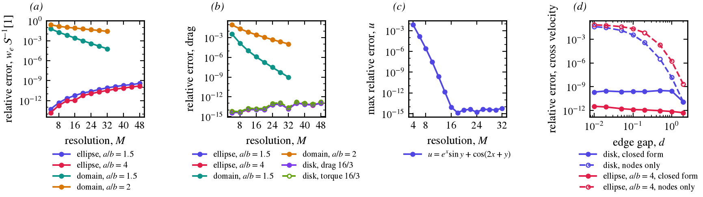
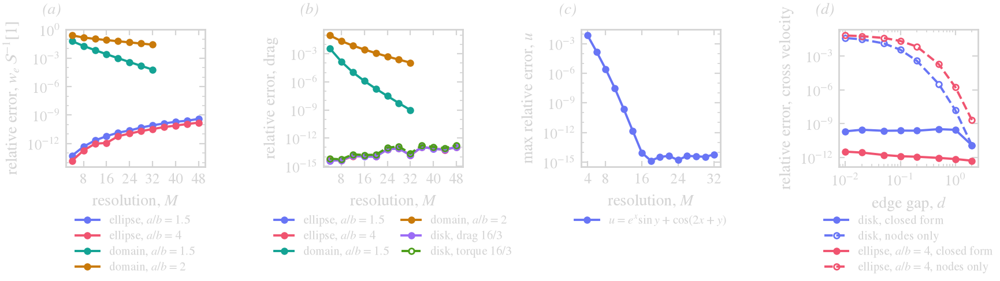

Method overview
Integral equations on an open surface are hard to discretize to high order because their solutions are singular at the edge. On a flat surface $\Omega$ with edge $\partial\Omega$, let $d$ be the distance to the edge. The density of a first-kind equation with the single layer behaves like $d^{-1/2}$, and the density of a hypersingular equation like $d^{1/2}$. On the unit disk $d^{1/2}$ is, to leading order, the weight $w = \sqrt{1 - r^2}$.
The projected spherical harmonics build this behavior in. They are the spherical harmonics on the unit hemisphere, as functions of the point's projection $(x, y)$ onto the disk. Those of one parity of $\ell + m$ are polynomials in $x$ and $y$; those of the other are $w$ times polynomials. So a density $g/w$ or $w g$, with $g$ smooth, is a smooth expansion in one parity, and expansions converge exponentially. On the disk they also diagonalize the Laplace operators:
\[\mathcal{S}\left[\frac{y_\ell^m}{w}\right] = \frac{\lambda_\ell^m}{4}\, y_\ell^m \quad (\ell + m \text{ even}), \qquad \mathcal{N}\left[y_\ell^m\right] = -\frac{y_\ell^m}{\lambda_\ell^m\, w} \quad (\ell + m \text{ odd}),\]
with $\lambda_\ell^m$ in closed form. Applying or inverting either operator is a transform, a multiplication by the eigenvalues, and an inverse transform.
The rest of the package extends this in three directions:
- Other kernels on the disk. A kernel of the form $g(\phi)/|x - y|$, where $\phi$ is the angle of $x - y$, couples each PSH only to modes of the same degree whose order is shifted by a Fourier mode of $g$. Its matrix in coefficient space is sparse. The Stokes single layer is three such kernels.
- Other domains. On an ellipse, an affine map turns the single layer into such an angular kernel on the disk. On a domain bounded by a smooth curve, a conformal map $f$ from the disk keeps the singular part, $|x - y| = |f'|\,|\zeta - \eta|$ to leading order, and moves the rest into a smooth factor.
- Many bodies. Each body's own operator stays spectral. The interactions between bodies are smooth integrals over separated bodies, summed with a fast method over the grid nodes of all bodies, and corrected by a closed form where bodies come close.
The pages that follow cover each part:
- The PSH basis: the basis, its parity, the grid and the transforms, and differentiation.
- Laplace operators: the single layer, the hypersingular operator, the Poisson problem, volume potentials, and shape derivatives.
- Stokes flow: angular kernels, the in-plane Stokes single layer, two viscosities, and the mobility problem of one body.
- Non-circular domains: ellipses by an affine map, and smooth domains by a conformal map.
- Suspensions: the many-body mobility problem, its fast sums, the close evaluation between bodies, and the preconditioner.
Limits lists what the method does not do, and where it needs care.
Validation


(a) The density of a conductor at unit potential, $w_e\,\mathcal{S}^{-1}[1]$ with $w_e = \sqrt{1 - x^2/a^2 - y^2/b^2}$, against its closed form $2/(b\,K(1 - b^2/a^2))$. By ellipse the solution is a single mode, so the error is rounding, growing slowly with $M$ (to 4e-10 at $M = 48$). By domain (the conformal map, from 256 boundary samples) it converges at a rate set by the map: from 6e-2 to 6e-5 at $M = 32$ for $a/b = 1.5$, but only to 3e-2 for $a/b = 2$; more boundary samples do not help. (b) The drag on an ellipse translating along its long axis, against its closed form, and the drag and torque on a disk (16/3): rounding by ellipse and disk; by domain, 1e-9 at $M = 32$ for $a/b = 1.5$ and 1e-4 for $a/b = 2$. (c) Δ⁻¹(f, g, disk(M)) for $u = e^x \sin y + \cos(2x + y)$: spectral convergence to 1e-14 by $M = 16$. (d) The velocity induced on one body by a random smooth force density on another, against the gap between them (two disks, or two ellipses with $a/b = 4$, side by side, $M = 16$), from suspension_velocity_eval at eps = 1e-13 against a fine direct quadrature. The node sum alone (open markers) degrades from 1e-9–1e-11 at a gap of 2 to 4e-2–7e-2 at 0.01. With the closed-form close evaluation (filled) the ellipses stay at 1e-12 at every gap; the disks level off at 2e-10, set by the targets just outside the default close-evaluation zone, which still use the node sum (with close_radius = 20, 3e-12).
The tests (test/) check these and other identities at fixed resolutions against exact or converged references.